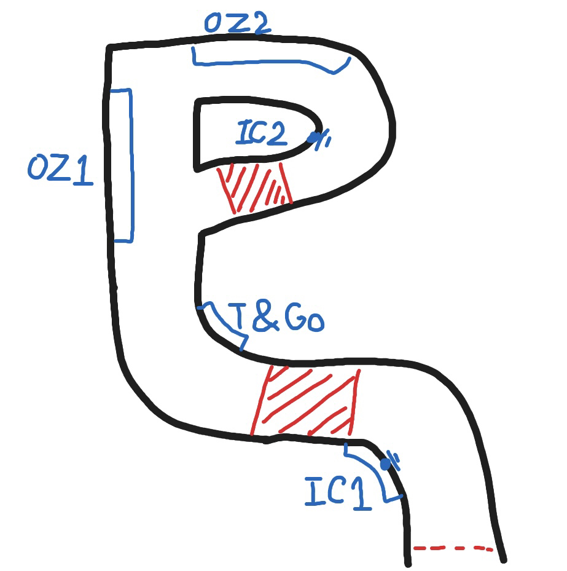

F2Powered主催"F2DP"の概要
このページではF2Powered主催の"F2DP"のコース、
レギュレーション、クリップ等の説明をしています。
Track
1st,SUZUKA circuit east (Reverse)


2st,Interlagos


3st,Aotopolis

4st,FD Load Atlanta

Regulation
- タイヤ: Confort Medium
- 駆動方式: FR,RWD only
- 馬力: 550ps以上
- 車重: 1240kg以上
- 車高: 100~170以内
- 前後重量配分: 52:48以上 リア寄りにすること
- ロールケージ: X状(タイプC)のロールケージを取り付けること
- りバリー: 自作リバリーであること
- 規定ステッカー:
- 自分のゼッケンをの青い範囲に貼ること
(ゼッケンのサイズは、直接入力で縦横共に「60」) - ハチマキは背景を白にして左から、黒のクスコ、
Chip-Powerが公開しているF2DP_2、
茜色のブレンボを貼ること
(配置やサイズ具合、色合い等はを参照して下さい)
Flow of the game
単走
- チームリーダーがルームを開き、ルーム作成のロードが終わり次第試合に出るメンバーは速やかに参加します
- トーナメント表通りに1走者と2走者はエントリーしレースを開始します
- レースがスタートしたら順走でスタートラインへ向かい、指定のスタートラインに着いたら、1走者パッシングをし5秒後にスタートします
2走者は全走者が2本目を走り終えるまで邪魔にならないようにタイヤを温めておいて下さい
(スタートのワンポイント: パッシングをし5秒後にスタートなので、
左下のルームの総合タイムのキリがいいタイミングでパッシングをしスタートすると、わざわざ自分で数える手間が減ります) - 1本目が走り終わったら1コーナー出口前でUターンをし順走でスタートラインまで戻りと同じ様にスタートします
- 2本目が走り終わったら次の人が走り終わるまで1コーナー入口で停止してください。
次走者は全走者がゴールをしたと共にスタートラインへ向かい心の準備が出来次第と同じ様にスタートします
※2本目はと同じです - お互い走り終わったら1走者と2走者は、順走でドリフトをしながら1周しゴールしてください
- 3走者 4走者以降はのやり方を自分に置き換えて速やかに行動して下さい
尚、これまでの説明では2人ずつでしたが、場合によっては3人ずつにするかもしれないので、臨機応変に対応出来るようにしっかり流れはイメージしておいて下さい
※もしどうしても分からない所がある場合は、チームリーダーにDMをし、文面かVCで説明を受けるか、予行練習をする予定合わせをして下さい。